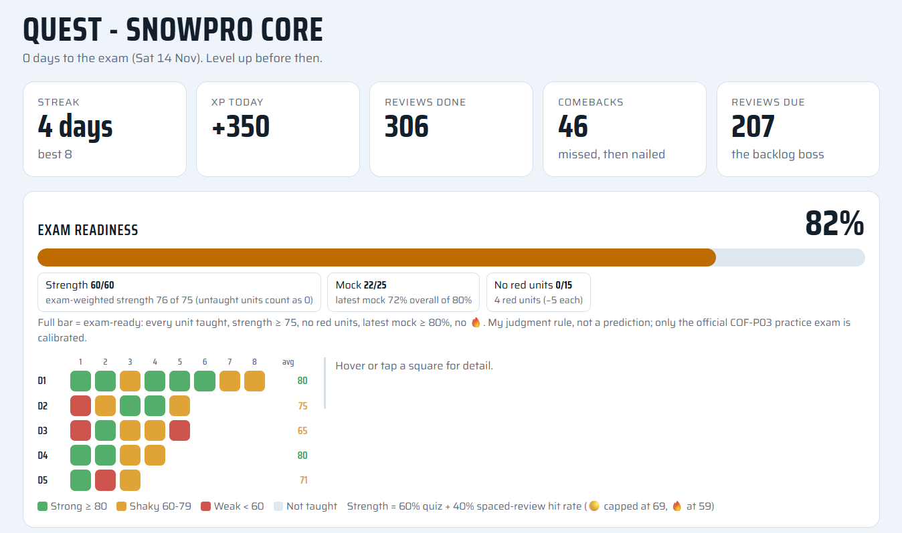
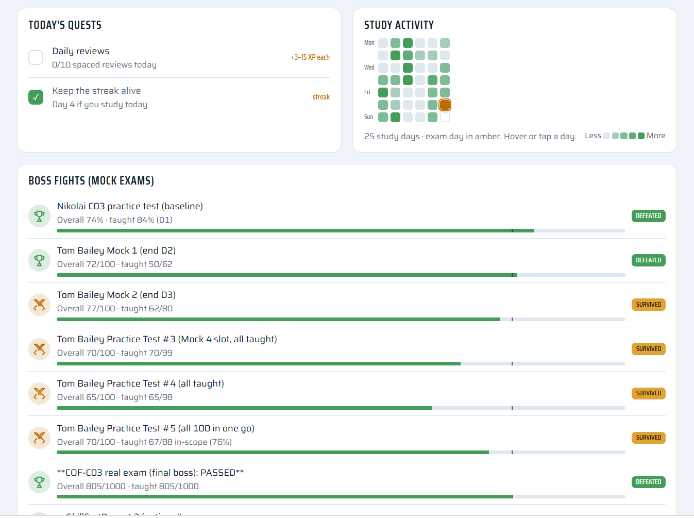
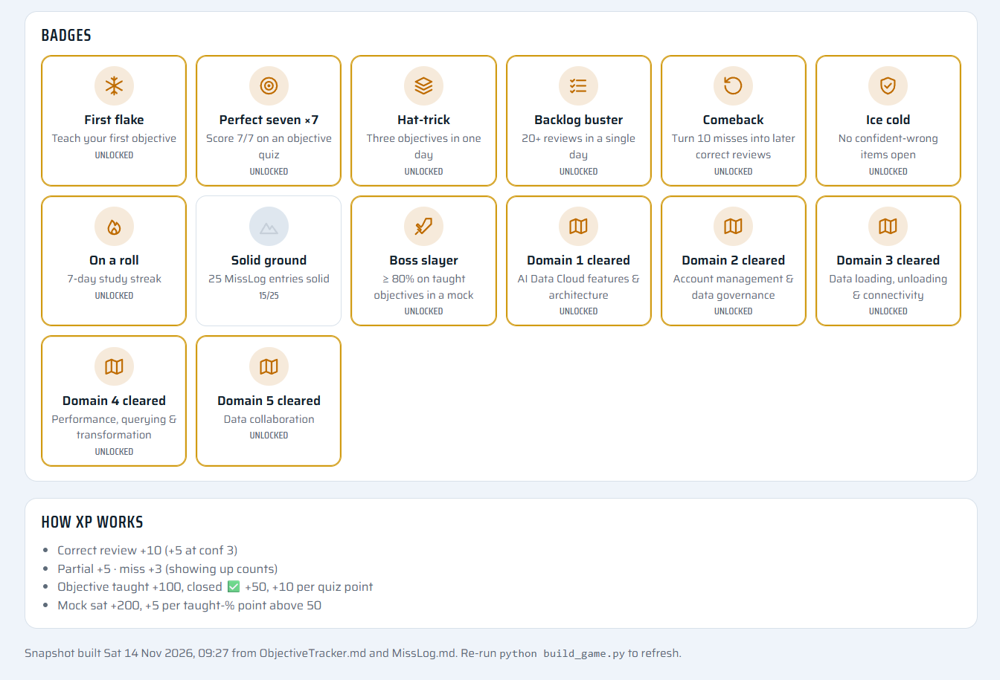

I passed the SnowPro Core (COF-C03) exam this morning with 805/1000 (the pass mark is 750), on my first attempt.
I'm a data engineer, and Snowflake was new to me. I know Microsoft Fabric well (Lakehouse, Warehouse, OneLake, Delta tables), but before this I'd done almost nothing in Snowflake. Structured study ran for about five weeks, from 8 October to 14 November, including an eleven-day gap when I was sick.
I didn't do this with a video course and a question bank. I used Claude Code as a tutor, with a setup that kept track of what I'd learned, what I kept getting wrong, and whether I was actually ready. This post covers how that worked, what I had to change along the way, and what I'd do differently.
Why not just a course and a question bank?
I tried that first, in September, and it didn't work for me:
- Long passive content doesn't stick for me. I'd watch an hour of video and keep very little of it.
- Cold diagnostic tests measured nothing. I took a practice test before studying, and every answer was a guess. All I learned was that I didn't know Snowflake yet, and it was demotivating.
- Question banks don't match the real exam. Pass reports kept saying third-party banks are nothing like the real exam in style. When I checked bank answers against the Snowflake docs, several were outdated or wrong.
What I wanted was a tutor who knew the syllabus, taught in short interactive chunks, quizzed me in the official exam's style, and remembered my mistakes from one session to the next.
The setup
The starting point was Databricks' AI Prep Guide, a guide to using an AI assistant to prepare for any Databricks certification. Its loop is "orient, diagnose, deep dive", and it expects you to paste a priming prompt at the start of every session. I adapted it for Snowflake and moved everything into files.
Claude Code reads a CLAUDE.md file in the project folder automatically, so the tutor setup is always loaded. No pasting. The project folder had:
| File | What it does |
|---|---|
CLAUDE.md |
Tutor instructions: the session loop, the rules, my background, and a table of renamed-product traps |
ObjectiveTracker.md |
Every sub-objective from the official study guide, with status, quiz score, date and a resume note. Read first in every session |
MissLog.md |
Every miss, with my reasoning, why it was wrong, a memory hook, and a spaced-review log |
QuickRef.md |
One short "rules + exceptions" block per objective, for rereading before mocks |
LessonsLearned.md |
What worked and what didn't. Most of this post comes from it |
| Two Python scripts | Turn the tracker and miss log into an HTML progress dashboard and a gamified version |
A few rules in CLAUDE.md did a lot of work:
- Only teach what's in the official study guide, using current product names. Snowflake renames things often (SnowSQL became Snowflake CLI, and Cortex LLM functions became AI SQL functions), so a table of old and new names gets checked against the docs.
- Ground every claim in docs.snowflake.com, with a link. No link means unverified. This caught the tutor out more than once, and it caught the question banks out even more.
- Use analogies from the platform I actually know, which is Fabric and Delta. They have to be current too, so liquid clustering rather than Z-order.
- Skip generic data-engineering basics. Teach the Snowflake-specific differences.
The study loop
One sub-objective per session, about 65–80 minutes:
- Warm-up (5 min): 3–5 spaced-review questions from the miss log, due on a 1, 3, 7, then 14-day schedule.
- Orient + guess: one plain-English line per topic, with a Fabric analogy and a flag on anything Snowflake-only. Then 2–3 unscored prediction questions ("Guess: does a cloned stream keep its pending records?"). Guessing before being taught primes you for the answer, and it costs nothing because it isn't scored.
- Teach: short chunks, each with a quick check question, a doc link and an optional SQL snippet to run in a trial account.
- Fact sweep: one card of 3–4 facts taken from the feature's docs overview page, then quick recall questions.
- Explain it back: I summarise the objective from memory, without scrolling up.
- Quiz: 10 questions in the style of the official sample questions (scenario, constraint, four almost-right options). 7 on today's topic and 3 interleaved from earlier ones. I rate my confidence on every answer: 1 = guess, 2 = unsure, 3 = sure.
- Repair: for every miss, and every correct guess, I get why I was wrong, why each distractor is wrong, and a variant question. Then it goes into the miss log.
- Close out: update the tracker, add a QuickRef block, rebuild the dashboards.
The confidence rating was the most useful part
The rating turned a score into a diagnosis:
- Wrong at confidence 3 = my mental model is wrong. Those got a fire flag in the tracker and extra time.
- Right at confidence 1 = lucky. Those went into the miss log as if they were misses.
- Over time, it showed that my "sure" answers were very reliable. On my last full practice test, confidence-3 answers were 90% right. That's what gave me the nerve to sit the exam when my overall scores were borderline.
What didn't work, and what I changed
Most of the value came from fixing things that weren't working. Each change below was triggered by evidence: a mock score, a pattern in the miss log, or me getting annoyed.
1. The tutor taught what it thought was important. After the first domain, independent practice questions showed that about 1 in 3 questions on topics I'd "learned" asked about facts never taught. The tutor had chosen coverage by judgment and leaned towards mechanisms and scenarios. Fix: build each lesson from the feature's docs overview page, plus a "fact sweep" card for defaults, limits, editions, privileges, cost drivers and UI surfaces.
2. Testing a fact before teaching it. The first fact sweep asked questions cold. Fix: teach-then-check. Nothing is tested before it has been on a card.
3. Fact cards that were just lists of names. "Trust Center (security posture)" teaches nothing you can reason with. Fix: every fact gets one line on what it does and one on when you'd use it. Fewer facts, explained.
4. Asking me to recall exact function names. The exam is multiple choice. It never asks you to write SYSTEM$GET_PREDECESSOR_RETURN_VALUE from memory. Fix: exact names are tested by recognition ("pick the real one from these plausible fakes"), and free recall is only for what a feature does. We also practised decoding names (DATABASE_STORAGE_USAGE_HISTORY = per database, storage, usage, history), which usually narrows four options to two. It doesn't settle near-identical names, and when the tutor oversold it, I pushed back.
5. Late third sessions. A session that started at 9 pm after two others scored fine on the night, and I'd forgotten nearly all of it by morning. Fix: a stop rule. Two sessions a day, and a shaky explain-back means stop before the quiz.
6. The tutor's own questions were sometimes wrong. A "wrong" option that was actually valid syntax. A question whose wording cued a distractor ("before re-running" made me think of a dry run). Fix: check every distractor and every stem against the docs before asking.
7. Reading too much into small samples. Early on, the tutor drew conclusions from 3–4 questions and called a gap in its own teaching my "reading slip". Fix: classify every miss as not taught, taught but not recalled, or reading slip, with evidence and sample sizes.
8. Rule-heavy topics felt like "a ton of overlapping rules". Access control and privileges especially. Fix: a QuickRef block per objective (core rules, exceptions, one picture), plus a cross-cutting "privilege patterns" card: five verbs (USAGE/OPERATE/MONITOR/MODIFY/OWNERSHIP) and "follow the data path", so I could reason out privileges rather than memorise them per feature.
9. The review backlog never moved. At 3–5 reviews a day, 51 items from September were never reached, and I missed many of them again on a retake. Fix: clear about 10 a day in quick free-recall batches.
Deciding whether I was ready
This was the hardest part. No practice signal is calibrated to the real exam, so I set a rule before seeing the results:
- A full third-party mock after each domain, scored against the official objectives (taught/untaught/doubtful key checked against the docs). I ignored the bank's own topic tags.
- The official practice exam as the main go/no-go signal.
- A final check the night before: sit only if a timed set came in at 75% or more. Otherwise reschedule, which was free with online proctoring.
The signals stayed stubbornly around the line:
| Signal | Score |
|---|---|
| Third-party mocks (mid-study) | 66–84% on taught objectives |
| Official practice exam | 72.5% |
| Mixed review, no topic warning | ~77–78% |
| Final timed set (first half of a mock) | 80% |
| Real exam | 805/1000 (pass = 750) |
That's around 70–80% in practice, and a pass with 55 points to spare. (The real score is scaled, so it isn't percent correct.) The official practice exam felt easier than the banks but scored the same. Most of my misses there were "I half-knew it and picked the runner-up". Very few were pure guesses. That told me to spend the last few days firming up near-misses and reading questions slowly. Cramming more trivia wouldn't help.
The one big miss
The real exam had a noticeable number of questions on a feature I'd never studied: Data Metric Functions, Snowflake's built-in data-quality checks.
They aren't named in the official study guide, so my "only teach guide objectives" rule kept them out of every session. But my study plan had a list of "recurring hot topics" from public pass reports, and DMFs were first on that list. Nothing ever turned that list into a lesson.
The lesson: the guide's bullets are broader than their wording. Next time, I'll map every topic from pass reports onto the guide bullet it could sit under, and give each one at least one fact card.
Making it a bit of a game
Halfway through, I asked Claude to build a gamified dashboard from the same tracker data: XP, a streak, badges, a heatmap of objectives, a GitHub-style activity grid, and practice mocks as "boss fights". It sounds gimmicky, and it was a bit. But on the days I was tired, a streak counter and a "reviews due" number got me to do 10 minutes of review when I'd otherwise have done nothing.



What I'd keep, and what I'd change
Keep
- Instructions live in a file. The tutor never forgot the rules or where I was up to.
- Orient, teach, then quiz. Nothing tested cold.
- Confidence ratings on every answer.
- A miss log with spaced review, where every miss is classified as not taught, not recalled or slip.
- Docs links for every claim, and the docs win over any question bank.
- A readiness rule set before seeing the results.
Change
- Turn pass-report hot topics into lessons from day one.
- Start spaced review of the backlog at full volume from the first week.
- Protect against illness gaps. My eleven sick days cost more in retention than in coverage, so a light daily review would have helped even while I was unwell.
On AI tutors in general: Claude was a very good tutor when it was held to the docs. It made mistakes: wrong distractors, a misremembered default, overconfident conclusions from small samples. But the setup made those mistakes visible, and most of them were caught. Treat it as a well-read, tireless study partner who has to show its sources.
Try it yourself
None of this method is Snowflake-specific, so I've packaged it as a free, open-source kit: Cert PT ("Petey"). It works for any exam with a published study guide and an official docs site (Snowflake, Microsoft, AWS, Databricks, GCP and others).
- Create your own private copy with Use this template, drop your exam's study guide PDF into
guide/, open Claude Code and run/init-exam. Petey reads the guide, asks a few questions (exam date, the platform you already know, which days you can study) and writes your tracker, miss log and study plan. - Then say "next objective" and the loop starts: teach, quiz with confidence, repair, spaced review.
- Both dashboards are included, the plain one and the game view.
- Everything in this post that I learnt the hard way (hot topics, recognition for names, the stop rules) is already built into the rules.
It doesn't ship any exam questions, and your progress stays out of git. If you try it, especially on a different vendor's exam, I'd love to hear how it went: open an issue or send a pull request.
Brad Coles is an Associate Director and Data Engineering Capability Lead ANZ at Synechron Australia, specialising in lakehouse architecture, table formats and query execution. Connect on LinkedIn.
If this article helped you, click here to see some ways you can support me.